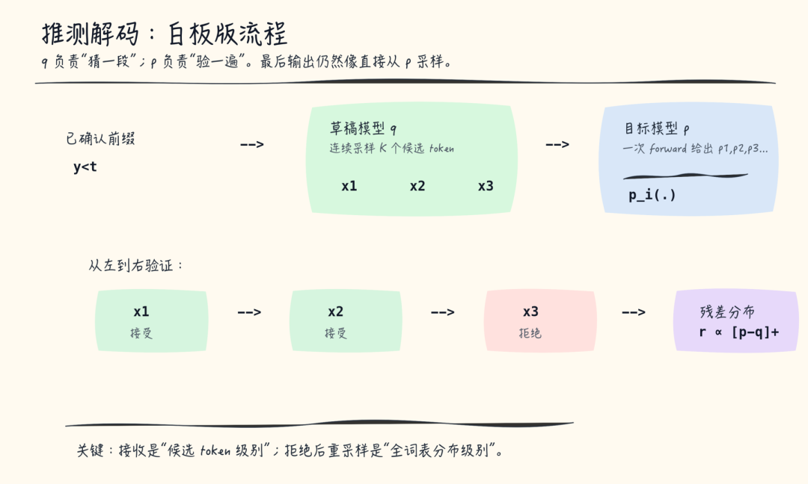
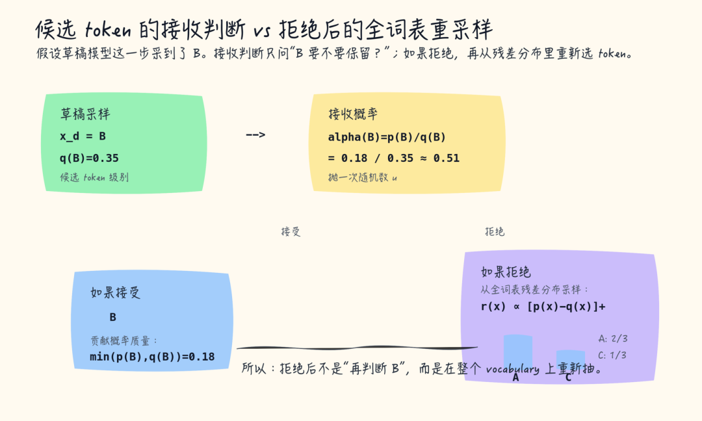
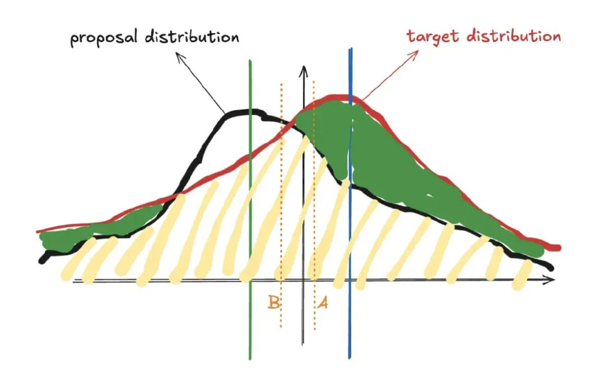
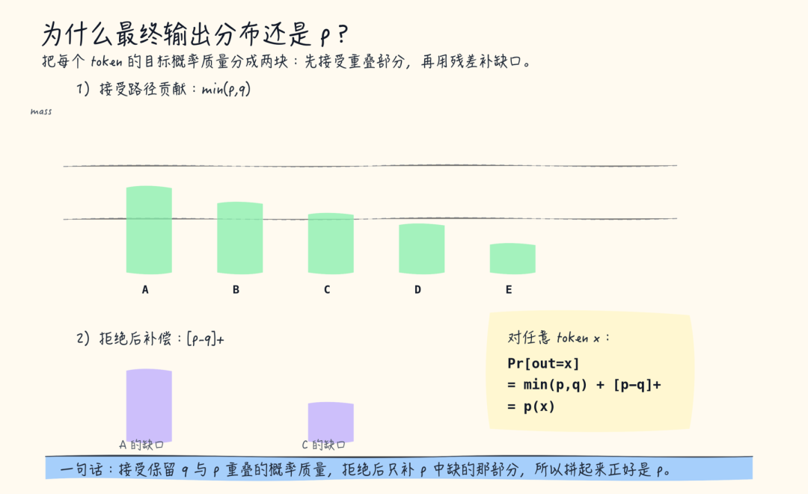
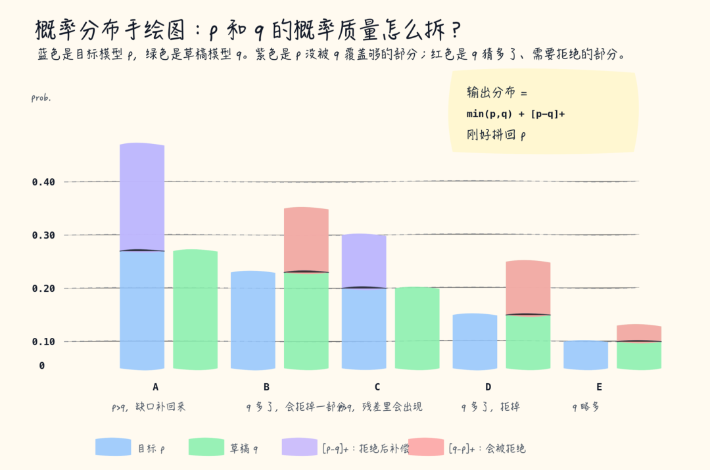
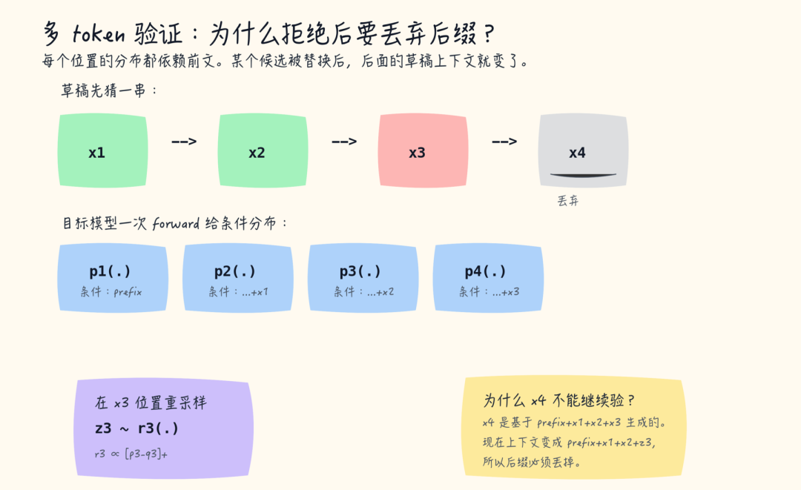

从拒绝采样的数学保证，到 EAGLE 特征层草稿，再到 P-EAGLE / DFlash / DSpark 并行草稿生成 —— 一份从零开始的系统性学习笔记：原理、公式、架构图与可运行代码。
大语言模型生成文本的过程是自回归（autoregressive）的：每生成一个 token，就要把整个模型的所有参数从显存读一遍。当模型足够大时，真正卡住速度的不是计算，而是显存带宽（memory bandwidth）。
以 70B 参数的模型为例（FP16 存储）：
在 NVIDIA H100（显存带宽约 3.35 TB/s）上，每生成一个 token 至少要读一遍全部权重：
在 A100 80G（约 2 TB/s）上则只有约 14 tok/s。而一次前向中每个 token 的激活量（激活、KV cache 增量）不过几百 KB 到几 MB —— 相比 140 GB 的权重读取可以忽略不计。这就是关键洞察的起点：
传统自回归解码的工作方式是：
<prefix> 跑一次前向 → 得到下一个 token 的分布 → 采样出 x₁；<prefix, x₁> 跑一次前向 → 得到 x₂；投机解码（speculative decoding）的思路则完全相反：先让一个又快又小的"草稿模型"连续猜出一整串候选 token，然后让大模型用一次并行前向把它们全部验证掉。被验证通过的 token 全部免费"预支"到手，被拒绝的 token 用数学上严格的方法修正 —— 整体分布与大模型直接解码完全一致。
上面的 140 GB 例子对稠密模型成立——每个 token 都要读全部权重。但近年主流模型大量采用混合专家（MoE）结构（DeepSeek-V3/V4、Qwen3-30B-A3B、GLM-5.2、Kimi K3、Mixtral 等），其带宽账本完全不同，关键在于总参数 vs 激活参数的区别：
| 模型 | 总参数 | 激活参数 | 总专家数 | 激活专家数 | 每 token 读取量 | 说明 |
|---|---|---|---|---|---|---|
| 稠密 70B | 70B | 70B（全部） | —（无专家） | — | 140 GB（fp16） | §1.1 的例子，全读 |
| Qwen3-30B-A3B | 30.5B | 3.3B | 128 | 8 | ~6.6 GB（fp16） | 48 层全 MoE，A3B = Active 3.3B，约 1/9 |
| Mixtral 8×7B | 46.7B | 12.9B | 8 | 2 | ~26 GB（fp16） | top-2 路由，约 1/3.6；"7B"是近似命名，单专家实际仅 0.18B |
| DeepSeek-V4-Flash（2026-07 开源） | 284B | ~13B | 256（+1 共享） | 6 | ~10 GB（FP4/FP8 混合） | 43 层全 MoE，top-6，1M 上下文；304B 含 DSpark 草稿模块 |
| DeepSeek-V3 | 671B | ~37B | 256（+1 共享） | 8 | ~37 GB（fp8） | top-k 路由只激活少数专家，约为总参数的 1/18 |
| GLM-5.2（2026-06） | 744B | ~40B | 256 | 8 | ~40 GB（fp8） | 78 层，MLA + DSA 稀疏注意力，1M 上下文 |
| DeepSeek-V4-Pro（预览） | 1.6T | 49B | 未公开 | — | ~40 GB（FP4/FP8 混合） | CSA/HCA 混合注意力，1M 上下文 |
| Kimi K3（2026-07） | 2.8T | ~104B | 896（+2 共享） | 16 | ~52 GB（MXFP4） | Stable LatentMoE，稀疏度 1.8%，首个开源 3T 级模型 |
验证公式：激活参数 = 共享层 + 专家总参 ×（激活专家数 ÷ 总专家数）。六款 MoE 模型的完整账本分解（数字按各官方 config 推算）：
四个要点：
EP 与 TP 的分工：两者是正交的两个维度、生产中总是配合使用——TP 切分稠密层（attention 的 QKV/O、embedding：矩阵切成多份、每步 all-reduce 同步），EP 切分稀疏层（专家 FFN：每卡只算自己被激活的专家）。专家层不能用 TP 代替 EP：总 FLOPs 无论怎么切都不变（都是 8 个激活专家），但 TP 切专家会改变计算图的连接结构——EP 下 token 只与激活专家所在的 8 张卡通信（稀疏连接，其余卡可同时处理别的 token），TP 下每个激活专家都切分在全部参与卡上，token 必须流经每一张卡、每算一个专家就 all-reduce 同步一次，专家级并行退化为矩阵级并行、卡间强同步（SIMD）——这就是"稀疏计算被稠密化"的含义：省的不只是"算多少"，更是"token 只和少数卡发生关系"。因此生产配置是"大 EP + 小 TP"。
EP 必须大的原因有三：
但 EP 不能无限大：EP 上限是专家总数、必须整除；attention 权重不随 EP 切分（由 TP/PP 负责），EP 增大的同时 attention 权重要在每张参与卡上驻留或跨卡同步，卡越多这部分开销越大；all-to-all 通信量随 EP 增大（token 要与更多卡通信），受 NVLink/NVSwitch 互联带宽约束。DeepSeek-V3 官方训练用 EP=64（每卡 4 专家）+ TP，vLLM/SGLang 社区推理常用 EP=32/64 + TP=1~8；Kimi K3（896 专家、2.8T）则需要大 EP + 多节点（64+ 加速器）才能部署。
这对投机解码有两个直接影响：一是 MoE 目标的单 token 成本更低，投机收益需重新实测（附录 A.1 的 DFlash 实验正是基于 MoE 的 Qwen3-30B-A3B）；二是草稿头（EAGLE / MTP）通常只挂 MoE 的共享层，草稿开销进一步降低——两者同向有利。
| 角色 | 草稿模型（Draft Model） | 目标模型（Target / Verifier） |
|---|---|---|
| 职责 | 快速猜出后续 K 个候选 token（投机长度 K，也叫 γ） | 一次并行前向，校验全部候选，并产出修正后的 token |
| 规模 | 远小于目标模型（如 0.3–2B vs 8–70B），或仅是一个额外的"解码头" | 用户真正想要的那个大模型 |
| 来源 | 独立小模型 / 目标模型的子模块 / 特征层外推头 / n-gram 匹配（无参数） | 任意现成 LLM |
| 分布 | q(x) —— 可能与大模型不一致，允许犯错 | p(x) —— 最终输出必须严格服从它 |
d₁ d₂ … d_K；p(·|prefix, d₁…d_{i-1})；
"一次前向同时算出所有候选位置的目标分布"不是投机解码发明的技巧，而是因果语言模型的天然属性。用具体例子看：设前缀长度 L、草稿生成 3 个候选 d₁ d₂ d₃，目标模型输入序列 [x₁…x_L, d₁, d₂, d₃]（长度 L+3），标准的下三角因果掩码保证：
| 输入位置 | 因果掩码可见范围 | 输出分布 | 验证用途 |
|---|---|---|---|
| L（真实前缀末位） | [1..L] | p₀ = p(·|x₁…x_L) | 验证草稿 d₁ |
| L+1（草稿 d₁） | [1..L+1] | p₁ = p(·|x₁…x_L, d₁) | 验证草稿 d₂ |
| L+2（草稿 d₂） | [1..L+2] | p₂ = p(·|x₁…x_L, d₁, d₂) | 验证草稿 d₃ |
| L+3（草稿 d₃） | [1..L+3] | p₃ = p(·|x₁…x_L, d₁, d₂, d₃) | 若全部接受，直接作为下一轮起点 |
每个位置都在预测"下一个 token"，而因果掩码保证位置 i 的输出只看到前 i 个 token——所以拼接候选后的一次前向，天然等于同时做了多个位置的预测，验证所需的全部目标分布一次拿全。这就是"一次前向验证 K 个候选"的机制根基（来源：糖嘟嘟的AI学习笔记《投机解码深度技术解析》）。
既然投机解码依赖"一次前向算出多个位置的目标分布"，那逐像素去噪的扩散模型（DiT）是不是没有投机解码？答案分两层：
| 维度 | LLM 投机解码 | 扩散投机解码（DiT） |
|---|---|---|
| 生成过程 | 自回归 token 串 | 迭代去噪 x_T → x₀ |
| 草稿 | 小模型猜 token 串 | 轻量预测未来去噪步（Taylor 外推 / 特征缓存） |
| 验证对象 | 逐位置目标分布 p | 去噪状态 / 特征一致性（L² 误差、端点对齐） |
| 接受 / 修正 | 拒绝采样（无损） | 误差阈值 / 不确定性松弛（近似无损） |
| 代表工作 | EAGLE / Medusa / 并行草稿 | SpeCa / ASDSV / FREE / Block Verification |
实际成果：SpeCa（Taylor 级数轻量草稿预测未来时间步特征 + 层间 L² 误差验证，FLUX 6.34× / DiT 7.3× / HunyuanVideo 6.1×）；ASDSV（投机验证只检查初始与最终状态对齐、按去噪阶段动态调整草稿步数 K，Flux.1-dev / Wan2.1 上 1.77–3.01×）；FREE（特征级自回归草稿 + 并行验证 + 不确定性松弛，ImageNet-512 无损 1.86×）。当扩散被"自回归化"时（Muse 的掩码扩散、VAR 的尺度级自回归、Chameleon 的图像 token 自回归），token 级投机解码范式会完整回归。
本质上，投机解码 = 通用计算的推测执行（speculative execution）思想——"便宜的近似生成 + 昂贵的验证修正"，适用于任何"生成过程可分解为可验证步骤"的生成器：LLM 的步骤是 token（验证=目标分布），扩散的步骤是去噪步（验证=状态一致性），VAR 的步骤是尺度（验证=目标尺度分布）。token 只是它在语言模型上的具体形态。
投机解码最迷人的地方在于：它不是一个启发式近似，而是一个数学上无损（lossless）的采样过程。输出分布与目标模型直接解码逐 token 完全一致。这一保证来自经典的拒绝采样（rejection sampling）技术，最早由 Leviathan 等（2023）与 Chen 等（2023）独立给出。
投机解码的"无损"不是一个玄学口号，而是一个可以严格证明的等式。为了看懂它，先把局面摆清楚：
补充：p(x) 与 q(x) 的具体形态——它们是词表大小 |V| 的一维概率向量（如 Llama 32k、Qwen3 151k、DeepSeek 128k），每个元素 p(vᵢ) 是"给定前缀下下一个 token 恰好是词表中第 i 个 token"的概率：
于是问题变成：如何设计一个"裁判"，把 q 采出的样本 x，改造成一个服从 p 的样本？要求有两个：
规则 2 为什么长这样：三个设计要求逐条翻译。这个表达式不是随意写的，而是"拒绝后如何补抽"的三个要求逐条翻译的结果：
max(0, ·) 把差额为负（草稿给多了）和为零（刚好够）的位置全部截断归零；三个符号各管一个约束：∝ 保证它是分布，max(0,·) 保证只补缺口，p−q 保证补得精确。而且这个表达式是被无损条件唯一决定的：输出 = min(q,p) + (1−α)·r 必须等于 p，解出 r = max(0, p−q)/(1−α)（式 6）——换成任何别的分布都会"有损"。含义一句话：规则 2 是一份"缺口清单"采样器——缺口越大的 token 越可能被补抽，没有缺口的（含给多了的）绝不补抽。
把 min(1, p/q) 想成一个"概率折扣器"——把草稿的采样频率打折到目标模型认可的额度：
一句话记住 min(1, p/q) 的哲学：只裁掉草稿的"过度自信"（q > p 时打折），从不裁草稿的"谦逊"（q < p 时全收，缺口由拒绝路补）。所以接受路最多贡献 min(q, p)，永远不可能超过草稿实际采到的份额。
注意规则 2 的重采样不依赖刚被拒绝的那个 x，而是看整个分布的差额——"哪些 token 是目标模型比草稿模型更看好的"。被拒绝只是触发了"盘点差额"这件事。

"长期"的数学依据是大数定律：每次接受/拒绝是独立的伯努利试验，次数足够多时频率收敛到期望——草稿采样 1000 次，约 900 次采到 A，其中每次以 1/9 概率放行，900 × 1/9 ≈ 100 次接受 → A 出现约 10%。且 A 不会通过拒绝路再出现（残差质量 max(0, p−q) = 0，因 p < q），所以总频率 = 接受路 0.1 + 拒绝路 0 = 恰好 10%。
对比固定阈值：折扣率要么 0 要么 1，无法完成"q 到 p 的转换"（1/9 < 0.5 → 永远拒绝 → 0.9×0 = 0 ≠ 0.1）；随机数机制下"侥幸放行"是精确设计的概率——每次放行的概率恰好是 p/q。这也就是 §3.3 式 (5) 的实例：P(接受且输出 A) = q·min(1, p/q) = min(q,p) = 0.1，每一次试验的期望贡献就是 0.1，大数定律保证频率收敛到它。
推导框第一行 P(输出 x) = q(x)·min(1,p/q) + (1−α)·r(x) 是 §3.3 六步证明中第 1、2、5 步的合并写法，没有新东西：
| 步骤 | 内容 | 贡献 |
|---|---|---|
| 第 1 步（拆分） | P(输出 x) = P(接受且输出 x) + P(拒绝后采样到 x) | 公式的"+"结构 |
| 第 2 步（接受路） | P(接受且输出 x) = q(x)·min(1, p/q) | 公式的第一项 |
| 第 5 步（拒绝路） | P(拒绝后采样到 x) = (1−α)·r(x) | 公式的第二项 |
下面把"输出分布 = p"完整推一遍。每一步都写清理由，一共只需要六步：
一个 token 要么走"接受"路直接输出，要么走"拒绝 → 重采样"路输出。两条路互斥（接受和拒绝不会同时发生），所以总概率等于两者之和。
草稿先以概率 q(x) 采出 x，裁判再以概率 min(1, p/q) 放行。乘起来后化简：若 p ≥ q，则 q × 1 = q = min(q,p)；若 p < q，则 q × p/q = p = min(q,p)。两种情况都得到 min(q,p)。

把第 2 步对所有可能的 token 求和，得到"草稿被放行"的总概率。α 越大，草稿越合格——但注意：α 只决定效率，不决定正确性（正确性由第 6 步保证，与 α 无关）。
先验证分母合法：Σx max(0, p−q) = Σx (p(x) − min(p(x), q(x))) = 1 − α。分子分母都是合法量，所以 r 是一个真正的概率分布（非负且和为 1）。
拒绝概率 (1−α) 乘以 r(x)，恰好把归一化因子消掉——结果正是"目标与草稿的差额"。这一步说明重采样不是随便补一个 token，而是精确地补在草稿"给少了"的地方。
最后一步用到一个对任意两个数都成立的恒等式：min(q,p) + max(0, p−q) = p。分两种情况验证：p ≥ q 时左边 = q + (p−q) = p；p < q 时左边 = p + 0 = p。无论草稿多不靠谱，两条路拼起来都恰好还原完整的 p——这就是"无损"的全部秘密。

抽象的证明看完了，用一个具体数字例子走一遍。假设词表只有三个 token {A, B, C}，某位置目标模型给出 p = [0.6, 0.3, 0.1]，草稿模型给出 q = [0.7, 0.1, 0.2]——草稿过度偏爱 A、冷落了 B。逐项计算：
| token | q(x) 草稿 | p(x) 目标 | 放行概率 min(1, p/q) | 接受路贡献 min(q,p) | 差额 max(0, p−q) | 最终 P(输出 x) |
|---|---|---|---|---|---|---|
| A | 0.7 | 0.6 | min(1, 0.857) = 0.857 | 0.6 | 0 | 0.6 |
| B | 0.1 | 0.3 | min(1, 3) = 1（无条件） | 0.1 | 0.2 | 0.3 |
| C | 0.2 | 0.1 | min(1, 0.5) = 0.5 | 0.1 | 0 | 0.1 |

流程走读：
观察：草稿的"偏爱"被折扣（A 从 0.7 打到 0.6），草稿的"冷落"被补齐（B 从 0.1 补到 0.3），最终账目分毫不差——拒绝采样是一个完美的"分布校准器"。
即：投机解码产出的整个序列的联合分布，与目标模型自回归解码完全一致。逐 token 成立后，序列层面由链式法则自然成立——但"从左到右"这个顺序不是惯例，而是硬约束：
序列级一致性因此是单 token 证明的反复套用：前面的 token 都被接受时，当前位置的上下文与目标模型直接采样时一致 → 在此上下文中单 token 的拒绝采样证明成立 → 一旦拒绝并重采样，当前 token 已经服从目标分布，后续在新上下文重新开始。沿着链式法则走下去，整段序列的联合分布与目标模型自回归采样一致。

量化（INT8/FP8/INT4）和蒸馏是确定性近似——权重被改动，输出分布必然偏移，只是"偏移小到可接受"；投机解码没有改动任何权重，只是换了一套采样执行顺序，分布严格不变。这也是投机解码可以放心与量化叠加的原因：量化负责"压缩模型"，投机解码负责"加速解码"，两者正交。
此时目标分布 p 退化为 one-hot（argmax 处为 1）。接受规则退化为一个简单判定：草稿 token 是否等于目标模型此刻的 argmax。等于 → 接受（min(1, 1)=1）；不等于 → 拒绝，残差分布只剩 argmax，重采样必然得到它。这等价于"草稿猜对了直接白拿，猜错就纠正"，且此时"无损"升级为逐 token 输出完全相同（比分布相同更强）。
如果目标分布只有唯一合法 token（例如 JSON 语法强制的位置），min(1, p/q) = 1，草稿必然被接受。这解释了为什么在代码补全、JSON 生成、结构化输出等"高确定性"场景里，投机解码的接受率最高。
温度 T 的作用只有一个：在 softmax 之前把 logits 整体缩放。它不改变 token 的相对排序，只改变概率分布的锐度。式中 z 是 logits 向量（未归一化分数，与 §3.1 的符号一致；这里不用 u 是为了避免与规则 1 的随机数 u 混淆）：
数值示例：设 logits = [2.0, 1.0, 0.5]（三个候选 token 的分数），不同温度下实际采到的概率分布：
| T | 缩放后 logits/T | softmax 后概率 | 效果 |
|---|---|---|---|
| 0.2 | [10, 5, 2.5] | [99.3%, 0.67%, 0.05%] | ≈ 贪婪：几乎必选第一名 |
| 0.5 | [4, 2, 1] | [84.4%, 11.4%, 4.2%] | 锐利：第一名占绝对优势 |
| 1.0 | [2, 1, 0.5] | [62.9%, 23.1%, 14.0%] | 标准随机采样 |
| 2.0 | [1, 0.5, 0.25] | [48.1%, 29.2%, 22.7%] | 平坦：三个候选几乎等可能 |
# 手写实现：完整流程只有三步 def sample_with_temperature(logits, temperature=1.0): scaled = logits / temperature # ① 除以 T（核心一步） probs = torch.softmax(scaled, dim=-1) # ② softmax 归一化成概率 return torch.multinomial(probs, num_samples=1) # ③ 按概率采样一个 token
# transformers 实际实现（generation/logits_process.py，核心就一行） class TemperatureLogitsWarper(LogitsWarper): def __init__(self, temperature: float): if not isinstance(temperature, float) or not (0.0 < temperature): raise ValueError(f"`temperature` has to be a strictly positive float, but is {temperature}") self.temperature = temperature def __call__(self, input_ids, scores): scores = scores / self.temperature # 全部魔力在这一行 return scores
选择原则只有一条：任务的信息熵越低（答案越唯一），T 越小；任务越开放（答案越多样），T 越大。T 对生成质量的影响通常非单调——太低会重复/死板，太高会跑题/编造，需要在验证集或人工评测上找到甜点（sweet spot）。
| 场景 | 典型 T | 为什么选这个值 |
|---|---|---|
| 代码生成 / 补全 | 0.1–0.3（可 greedy） | 代码语义确定性强；低 T 显著降低语法与逻辑错误、提高可编译率。OpenAI Codex 用 0.2 采样提升 pass@k；DeepSeek-Coder 官方建议 0.2 |
| 数学推理 / 逻辑 | 0–0.3 | 答案唯一，需要稳定、可复现的推导链，低 T 减少中间步骤跑偏 |
| 结构化输出（JSON / 函数调用 / 表格） | 0.1–0.2（可 greedy） | 格式合法性优先于多样性，确定性输出可被下游程序直接解析 |
| 通用对话助手 | 0.6–0.8 | 自然度与多样性的平衡点。Llama 3 默认 0.6、Mistral 默认 0.7、GPT 系列默认 1.0（配合 top_p） |
| 创意写作 / 头脑风暴 | 0.8–1.2 | 需要新奇与发散，多样性优先；再高则连贯性崩塌 |
| 翻译 / 摘要 | 0.3–0.5 | 适度确定，避免过度重复措辞，同时不牺牲忠实度 |
| DeepSeek-R1 类推理链 | 0.6（top_p=0.95，禁 top_k） | 官方建议：推理链很长，T 太低容易陷入自我循环，太高会编造（"幻觉"） |
| 投机解码服务 | 0.1–0.5 | 保证草稿接受率 70%+：低温下草稿与目标分布同尖锐、argmax 一致率高；高温下接受率跌至 30–50%，投机收益消失（见下） |
回到 §3.2 的接受规则：草稿 token x 被接受的概率是 min(1, p(x)/q(x))。温度从两端影响它：
设每个位置草稿被接受的概率为 α（接受率，acceptance rate），投机长度为 γ。每轮验证时，连续接受的 token 数期望为：
这个公式分两步推导——先写出前进量的分布，再用"尾概率求和"把它变成等比数列：
一轮验证 γ 个候选位置，从左到右检验，前进量 T 只有两类结局：
| 前进量 T | 发生条件 | 概率 |
|---|---|---|
| t 个（1 ≤ t ≤ γ） | 前 t−1 个候选接受、第 t 个被拒（重采样修正产出第 t 个） | αt−1 × (1−α) |
| γ+1 个 | 全部 γ 个候选接受 + 奖励 token（bonus 直接采自目标分布 p，必然得） | αγ |
先明确"期望"是什么：期望（expected value）= 加权平均——每个可能取值 × 它的概率，全部加起来：E[T] = Σ t·P(T=t)。"期望"不是"希望"，而是"平均而言"：长期重复很多轮，每轮前进数的平均值（大数定律保证频率收敛到它）。类比掷骰子：期望 = 1×1/6 + 2×1/6 + … + 6×1/6 = 3.5——"掷很多次平均约 3.5 点"，虽然单次永远掷不出 3.5。
为什么可以换成"尾概率之和"：Σ t·P(T=t) 与 Σ P(T≥t) 是同一笔账的两种算法——把定义式展开，P(T=t) 会在 P(T≥1)、P(T≥2)、…、P(T≥t) 中各出现一次（共 t 次），所以"横着加（取值×概率）"等价于"竖着加（至少到达概率累加）"：
数字验证（γ=5, α=0.8）：定义式 1×0.2 + 2×0.16 + 3×0.128 + 4×0.1024 + 5×0.0819 + 6×0.3277 = 3.69；尾概率式 1 + 0.8 + 0.64 + 0.512 + 0.4096 + 0.3277 = 3.69 ✓——同一个期望，两种算法。
为什么这里用尾概率版：因为 P(T ≥ t) = αt−1 恰好是等比数列（几何概率），求和有闭式解；而定义式 Σ t·αt−1(1−α) 是带 t 的加权和，化简绕圈。同一个期望，哪个视角好算用哪个。而 P(T ≥ t) = 前 t−1 个位置都接受 = αt−1——注意 t = γ+1 时依然成立（前 γ 个候选全接受 + bonus 必得，概率 αγ），奖励 token 被这个公式天然包含：
错位相减的精髓：乘公比后数列整体平移一位，相减时中间所有项一一抵消，只留下首项 1 和越界的尾项 −αγ+1——"γ+1 项求和"被压缩成"两项相减"。数字验证（α = 0.6, γ = 5）：1 + 0.6 + 0.36 + 0.216 + 0.1296 + 0.07776 = 2.38336 = (1 − 0.6⁶) / 0.4 ✓。
边界检查：α → 1 时 τ → γ+1（全部接受 + 奖励 token），α → 0 时 τ → 1（只剩重采样保底的那个 token）。每项 αt−1 的概率含义是"能走到第 t 个位置"（前 t−1 个候选都被接受），把这些概率全部加起来就是期望前进数——这也是为什么 τ(α) 曲线在 α 接近 1 时急速上升（§4.3 模拟器可拖动验证）。
每轮的墙钟时间 ≈ 草稿阶段耗时 + 目标模型一次前向耗时。设草稿模型与目标模型速度比为 c（例如草稿 20× 快，c = 0.05），加速比近似为：
拖动四个滑块实时联动：投机长度 γ、接受率 α、期望接受长度 τ（与 α 双向联动——拖动任一个，另一个按式 (12) 自动反解）、草稿/目标速度比 c。右侧图实时显示 τ(α) 曲线与本轮前进量分布，信息面板给出参考加速比：
"草稿从哪来"决定了算法的训练成本、接受率上限和部署复杂度。六类主流方案按"草稿智能程度"递进：
| 方案 | 训练成本 | 额外显存 | 典型接受率 α | 典型加速 | 代表工作 |
|---|---|---|---|---|---|
| n-gram / Prompt Lookup | 零 | 零 | 低（重复文本高） | 1.5–2.5× | Prompt Lookup Decoding（2023） |
| 独立草稿模型 | 预训练 | 模型权重 | 0.55–0.70 | ~2× | Leviathan 2023；Chen 2023 |
| Medusa 解码头 | 轻量微调 | ~10% | 0.60–0.75 | 2.3–3.6× | Medusa（ICML 2024） |
| MTP 模块 | 训练时附带 | ~5% | 0.6–0.8 | 1.8–3× | DeepSeek-V3（2024） |
| EAGLE 特征层 | 轻量训练 | 草稿头 + KV | 0.70–0.80 | 3–5.6× | EAGLE / EAGLE-2 / EAGLE-3 |
| 并行草稿（P-EAGLE / DFlash / DSpark） | 轻量训练 | 草稿块 + KV | 0.85–0.95 | > EAGLE-3（1.2–1.5×↑） | P-EAGLE 2026；DFlash 2026；DSpark 2026 |
后面的章节将按这条主线逐个展开：先讲数学最干净的双模型经典方案（§6）与零训练的 n-gram（§7），再进入"寄生在目标模型内部"的 Medusa（§8）、EAGLE（§9）、MTP（§10），最后是 2026 年的最新浪潮——并行草稿生成（§11）。
各方案的优劣不是绝对的，取决于你能改到哪一层（来源：糖嘟嘟的AI学习笔记《投机解码深度技术解析》）：
投机解码的现代形式由两个团队在 2023 年独立提出，结论几乎相同：
方案朴素而优雅：用一个独立的小模型（如 125M–1.3B）当草稿，用大模型验证。草稿模型可以完全独立训练，不要求与目标模型有任何共享结构——只要求它"在任务分布上尽量模仿目标模型"。
import numpy as np def speculative_generate(draft, target, prefix, gamma=5, temperature=1.0): """经典投机解码主循环（示意实现）。 draft / target : 输入 token 序列、返回下一个位置 logits 的函数 prefix : list[int]，当前已生成的前缀 gamma : 每轮草稿 token 数（投机长度 K）""" while not is_eos(prefix): # ── ① 草稿：小模型自回归生成 gamma 个候选 ── drafts = [] for _ in range(gamma): logits_q = draft(prefix + drafts) # 小模型单步前向 drafts.append(sample_token(logits_q, temperature)) # ── ② 验证：大模型一次并行前向，拿到所有位置的真实分布 ── logits_p = target(prefix + drafts) # 关键：只跑一次！ # ── ③ 拒绝采样：逐位置检验 ── for i, x in enumerate(drafts): p = softmax(logits_p[i]); q = softmax(logits_q[i]) if np.random.rand() < min(1.0, p[x] / q[x]): # 式 (1) 接受 continue r = np.maximum(0.0, p - q) # 式 (2) 残差重采样 r /= r.sum() drafts[i] = sample_from(r) break # 首个失败位置停止 # ── ④ 前进：接受串 + 修正 token（最多 accepted+1 个）── accepted = 0 for x in drafts: if verified(x): accepted += 1 else: break prefix.extend(drafts[:accepted + 1]) return prefix
双模型方案有两个结构性弱点：
后续所有主流方案（Medusa、EAGLE、MTP、并行草稿）的进化方向高度一致：让草稿"寄生"在目标模型内部——共享它的权重、它的 hidden states、甚至它的 KV cache，从而既获得对齐，又省掉额外权重。
Prompt Lookup Decoding（2023，apoorvumang/prompt-lookup-decoding）提出一个几乎"免费"的草稿来源：把当前已生成的后缀当作 n-gram，在 prompt 里找它最近一次出现的位置，把那个位置之后的 token 直接当作草稿。
为什么叫 n-gram："gram" 源自希腊语 gramma（书写），计算语言学里指"一个语言单元"（词、字符、token）；n-gram 就是连续的 n 个单元组成的序列（1-gram 叫 unigram、2-gram 叫 bigram、3-gram 叫 trigram，如 "我 爱 投机解码" 的 bigram = [我爱, 爱投机解码]）。这个词来自统计语言模型时代——神经网络之前的主流语言模型就是 n-gram 语言模型，用"前 n−1 个词出现后第 n 个词的条件频率"预测下一个词。Prompt Lookup 借用了这个术语：把当前上下文最后 n 个 token 当作"查询 n-gram"，在更早的位置找相同的 n-gram——n 越大匹配越精准但越难命中（长 n-gram 在上下文中出现次数少），n 越小越容易命中但误匹配多，vLLM 默认 5/5 是经验平衡点。
整个过程不需要任何模型、零训练、零额外显存——只需要在上下文里做一次字符串匹配。核心函数只有十几行：
def find_candidate_pred_tokens(input_ids, max_ngram_size, num_pred_tokens): """在 input_ids 中找当前后缀的 n-gram 匹配，返回匹配后的延续作为候选草稿""" input_length = input_ids.size(1) for ngram_size in range(min(max_ngram_size, input_length - 1), 0, -1): # 当前最后 ngram_size 个 token 作为查询片段 query = input_ids[0, -ngram_size:] # 在更早的位置滑动搜索相同的片段 positions = find_overlapping_windows(input_ids[0, :-ngram_size], query) if positions: match_start = positions[-1] + ngram_size # 取最近一次匹配 return input_ids[0, match_start:match_start + num_pred_tokens] return torch.tensor([], dtype=input_ids.dtype)
匹配范围：只在本条请求的上下文中找。搜索空间是当前请求的 input_ids（prompt + 已生成部分），多轮对话时包括整条对话历史——但绝不跨请求、不跨用户、没有全局索引。所以"代码文件、长文档、重复模板"这类单条上下文内重复多的场景命中率高；不同请求之间的重复（如许多用户问同一个问题）完全利用不到。找不到匹配时函数返回空候选，这一轮退化为普通解码（零风险，不猜就不错）。
匹配查找的开销：时间 O(L·nmax)（L = 上下文长度）——对每个候选 n 在序列上滑动窗口比对，实际实现用向量化（torch.eq 整行比较），1M token 长上下文也只需毫秒级；且每轮投机开始时只匹配一次（一次匹配拿到 γ 个候选再统一验证），相对目标模型每轮一次前向（几百毫秒量级）可忽略（< 1%）；显存开销为零（不加载任何模型、不建索引，直接扫描现有 token 序列）——这是所有草稿方案里成本最低的，也是它"零训练、零显存"定位的来源。
该方案已直接内置于 HuggingFace Transformers：
# prompt_lookup_num_tokens = 每轮草稿的候选 token 数 outputs = model.generate( **inputs, max_new_tokens=128, prompt_lookup_num_tokens=5, # ← 开启 n-gram 投机解码（无需草稿模型） )
# 在线服务 vllm serve Qwen/Qwen3-30B-A3B --max-model-len 16384 \ --speculative-config '{"method": "ngram", "num_speculative_tokens": 5, "prompt_lookup_max": 5}' # 离线（Python API） llm = LLM( model="meta-llama/Meta-Llama-3.1-8B-Instruct", speculative_config={ "method": "ngram", "num_speculative_tokens": 5, "prompt_lookup_max": 4, # 不设置时默认 5/5 }, )
两个参数的区别与联系——它们是 n-gram 投机解码的两个独立旋钮：
两者协作：先匹配、后取量——prompt_lookup 决定"拿多长的指纹去找"，num_speculative_tokens 决定"找到后拿多少"。改前者不影响候选数，改后者不影响匹配长度，相互独立。
Medusa（Princeton / Together AI / UIUC 等，ICML 2024）提出：与其训练独立草稿模型，不如在目标模型最后一层的 hidden states 上直接挂 K 个轻量解码头。第 k 个头负责预测位置 t+k 的 token。主干模型完全冻结，只训练几个 MLP 头——训练成本与显存开销都极小。
关键创新在于验证阶段：K 个候选可以组成一棵候选树（每个位置取 top-s 个候选，做笛卡尔积组合），Medusa 用修改过的树注意力掩码在一次前向里验证整棵树的所有路径——树中每个节点只关注自己所在分支的祖先，互不干扰。
输入是主干最后一层的 hidden state h_t（[batch, d_model]，d_model 如 LLaMA-7B 的 4096、Qwen 的 2048–8192），输出是 K 个词表 logits（每个 [batch, |V|]，|V| 如 32k / 128k / 151k）——d_model 维向量映射到词表大小，与主干自己的 LM Head 是同一类投影，只是挂在更浅的位置、各预测一个不同的未来位置。典型实现是 1–2 层小 MLP + 输出投影，且 K 个头共享一个 base、只各留一个独立输出头（省参数，类似多头注意力的共享投影）：
class MedusaHeads(nn.Module): def __init__(self, d_model, vocab_size, K, hidden=None): super().__init__() hidden = hidden or d_model self.base = nn.Sequential( # 共享 base（1–2 层） nn.Linear(d_model, hidden), nn.SiLU(), ) self.heads = nn.ModuleList([ # K 个独立输出头 nn.Linear(hidden, vocab_size) for _ in range(K) ]) def forward(self, h_t): # h_t: [batch, d_model] x = self.base(h_t) # [batch, hidden] return [head(x) for head in self.heads] # K × [batch, |V|] logits
参数规模：主要来自输出投影 d×|V|（词表投影没法省）——以 d=4096、|V|=32k 为例，每头输出投影 4096×32000 ≈ 131M，K=3 头 + 共享 base 合计约 426M（7B 主干的 ~6%）；典型配置 medusa_num_heads=3、medusa_num_layers=1（K=3–5 头、1–2 层）。对比：EAGLE 草稿头预测"下一个特征"（d→d），输出投影只有 d×d，所以更小（§9.1 的 ~300–500M）——Medusa 必须输出完整词表分布（每头要独立采样 top-s），输出投影躲不掉。
推理计算链：主干前向取 h_t → K 个头并行算 logits（可 batch 成一次矩阵乘，相对主干前向可忽略）→ 每头 top-s 采样 → 笛卡尔积候选树 → 树注意力一次前向验证（对应图 13）。
笛卡尔积（Cartesian product）= 把所有集合的选项"两两全配对"：A × B = {(a, b) | a ∈ A, b ∈ B}。例：{a₁, a₂} × {b₁, b₂} = {(a₁,b₁), (a₁,b₂), (a₂,b₁), (a₂,b₂)}（2×2 = 4 个组合）。在 Medusa 里，K 个头各预测未来一个位置、每个头取 top-s 候选，笛卡尔积就是从每层各取一个、拼成完整序列：
图 13 里有两个参数决定候选树的大小，它们是正交的两个维度——K 管"预测多远"（深度），s 管"每层留几个选项"（宽度）：
| 参数 | 含义 | 管什么 | 代价 |
|---|---|---|---|
| K 个头 | 第 k 个头预测位置 t+k | 深度：草稿的"远见" | 越远接受率衰减（离当前上下文越远信息越少，尾部候选几乎随机） |
| top-s | 每个头从分布里取概率最高的前 s 个 token | 宽度：每层的容错 | 树指数膨胀 sK，一次前向验证的路径数爆炸 |
medusa_choices 参数即手动指定树形状）。与严格拒绝采样的对照——严格版看 p/q 比值（u ≤ min(1, p/q)，数学上保证输出分布 = p，无损）；Typical acceptance 看 p 的绝对水平（候选 token 的温度化概率 ≥ 阈值就放行，不再比较 p/q）：
| 严格拒绝采样（§3.2） | Typical acceptance（Medusa 工程版） | |
|---|---|---|
| 接受条件 | u ≤ min(1, p(x)/q(x))——看 p 与 q 的比值 | 候选 token 的（温度化）概率 ≥ 阈值（如 posterior_threshold = 0.09）——只看 p 的绝对水平 |
| 数学性质 | 输出分布严格 = p（无损） | 输出分布近似 p（有损但偏差小） |
| 接受率 | 数学上限（由 p、q 决定） | 更高（放宽条件） |
机制：先把目标分布 p 做温度缩放，把概率不低于阈值的 token 划入"典型集合"（模型"认真的候选"）；草稿 token 落在典型集合内 → 直接接受（不再看 p/q 比值）；只有落在集合外的"离谱"token 才走严格拒绝采样。直觉：正常生成时绝大多数 token 都是高概率的"典型 token"（如 "the"、句号、常见词），直接放行，接受率大幅提升。
为什么接受率更高：严格版即使草稿 token 合理（p 不小），只要 q 更大（p/q < 1）就有被拒风险；Typical 版绕开比值比较，避免大量"合理但 p/q < 1"的误拒。
代价与取舍：放行了一些"p 不够高但还算合理"的 token → 输出分布偏离 p（严格说有损，呼应 §3.5 误区 5）；但偏差通常很小——被放宽的 token 在 p 中概率本来不低，文本质量下降难以察觉（Medusa 论文在 MT-Bench 上验证质量不降）。这是用"可忽略的质量偏差"换"显著更高的加速"的工程取舍：追求极致吞吐的生产环境用它，需要严格无损的评测场景用标准拒绝采样。
# 训练 Medusa-1（只训头，4 GPU 示例，来自官方仓库） torchrun --nproc_per_node=4 medusa/train/train_legacy.py \ --model_name_or_path mistralai/Mistral-7B-Instruct-v0.2 \ --data_path sharegpt_prepared.json \ --bf16 True --output_dir ./medusa_out \ --num_train_epochs 2 --learning_rate 1e-3 \ --medusa_num_heads 3 --medusa_num_layers 1 \ --deepspeed deepspeed.json # 推理（单卡 batch=1） python -m medusa.inference.cli --model FasterDecoding/medusa-vicuna-7b-v1.3 # vLLM 集成（heads 加载为草稿模型） vllm serve YOUR_MODEL --speculative-config '{ "model": "path/to/medusa-heads", "num_speculative_tokens": 3, "method": "medusa" }'
EAGLE（arXiv 2401.15077，SafeAILab，ICML 2024）有一个深刻观察：草稿模型猜不中的根源，是它只能看到 token 级别的表面信息。而目标模型倒数第二层的 hidden states 里，已经编码了"模型正在想什么"的高层语义。
EAGLE 的做法：在目标模型的第二顶层特征上训练一个很小的自回归"特征外推器"：
其中 ft 是目标模型倒数第二层的特征向量，E(xt+1) 是刚生成 token 的 embedding。草稿头 F 只是一两个轻量层，但它在"特征空间"里自回归——每一环都携带目标模型自身的深层语义，因此接受率远高于任何独立小模型。且 F 不预测最终 logits 而预测特征，训练时共享目标的 LM Head，推理时用目标自己的 LM Head 解码 —— 天然对齐。
EAGLE 系列（1/2/3）的推理不是"草稿模型生成 + 目标验证"两个割裂阶段，而是下面这条五阶段循环——每轮循环只付一次目标前向 + γ 次轻量层前向，换来约 γ 个 token 的产出，且每轮保底前进 1 个 token：
一句话概括这条计算链：草稿阶段用轻量特征外推器低代价串出候选，验证阶段用目标模型一次前向批量"对答案"，更新阶段把已确认的 token 送回上下文——每轮循环只付一次目标前向 + γ 次轻量层前向，换来 γ 个 token 的产出。
EAGLE-2 只改 ② 的展开策略（置信度驱动的动态草稿树），EAGLE-3 只改 ② 的草稿头结构与训练（直接预测 token、多层特征融合、TTT），①③④⑤ 的骨架在三个版本中完全不变。
EAGLE-2 不改变训练，只改推理：用草稿模型输出的置信度近似接受率，在草稿阶段动态地决定每一步展开哪些分支（树越深，位置越靠后的节点越不确定），从而在同样算力预算下最大化期望接受长度。无需任何额外训练。
EAGLE-3 做了三件事，把加速推向新的量级：
| 版本 | 核心机制 | 相对 vanilla 加速（13B） | 亮点 |
|---|---|---|---|
| EAGLE (ICML'24) | 特征级自回归草稿 + 共享 LM Head | 3×（vs gpt-fast 2×，vs Medusa 1.6×） | 结构对齐、lossless 证明 |
| EAGLE-2 (EMNLP'24) | + 置信度驱动的动态草稿树 | 4×（vs EAGLE 1.4×） | 零额外训练 |
| EAGLE-3 (NeurIPS'25) | 直接 token 预测 + 多层特征融合 + TTT | 5.6×（vs EAGLE 1.8×；DeepSeek-R1 上 5.0×） | 加速缩放定律，大 batch 也有效 |
# 训练 EAGLE-3（官方仓库 SafeAILab/EAGLE，DeepSpeed） cd eagle/traineagle3 deepspeed main.py --deepspeed_config ds_config.json # 推理：EaModel 一键加载目标模型 + 草稿头 from eagle.model.ea_model import EaModel from transformers import AutoTokenizer model = EaModel.from_pretrained( base_model_path="YOUR_TARGET_MODEL", ea_model_path="yuhuili/EAGLE-3-LLaMA3-8B", # 草稿头权重 torch_dtype="auto", device_map="auto", ) output_ids = model.eagenerate( input_ids, temperature=0.5, max_new_tokens=512, ) # vLLM 部署（method: eagle3） vllm serve YOUR_MODEL --speculative-config '{ "model": "yuhuili/EAGLE-3-LLaMA3-8B", "num_speculative_tokens": 5, "method": "eagle3" }'
DeepSeek-V3（2024）在预训练阶段引入多 Token 预测（Multi-Token Prediction, MTP）：每个位置不仅预测下一个 token，还额外预测未来 D 个 token。MTP 模块由 D 个轻量顺序模块组成，每个模块在给定前面 token 的条件下预测一个未来 token——训练时它是强化学习信号（加速收敛、提升推理能力），推理时它直接充当内置草稿模型，无需任何额外训练。
deepseek_mtp / mtp 方法，DeepSeek-V3/R1 开箱即用；num_speculative_tokens: 1 起步；# vLLM：DeepSeek-V3 自带 MTP 草稿 vllm serve deepseek-ai/DeepSeek-V3 --speculative-config '{ "model": "deepseek-ai/DeepSeek-V3", "num_speculative_tokens": 1, "method": "deepseek_mtp" }' # TensorRT-LLM：一键启用（MTP Eagle 路径） python quickstart_advanced.py --model_dir <DIR> \ --spec_decode_algo MTP --spec_decode_max_draft_len 5
EAGLE-3 这类方案已经很强了，但它们仍受制于一个结构性约束：自回归草稿——每多投机一个 token，就要多跑一次草稿模型前向。2026 年，Speculators（vLLM 团队）与 vLLM 完整开源了三套并行草稿生成（parallel drafting）算法：P-EAGLE、DFlash、DSpark，把草稿阶段压平成一次前向传播。
即便 EAGLE-3 把接受率推到了 0.9 以上，自回归式的草稿生成在生产中仍有两个代价：
是，而且 Medusa 正是"并行草稿"这条路的开创者（与 PARD 并列）。这里的分类维度不是"有没有独立草稿模型"，而是两条正交的轴：
| 草稿方案 | 串行 / 并行 | token 级 / 特征级 |
|---|---|---|
| 经典双模型（小模型） | 串行（逐步生成） | token 级 |
| Medusa / PARD | 并行（一次前向 K 头） | token 级 |
| EAGLE-1/2/3 | 串行（特征递归） | 特征级 |
| P-EAGLE / DFlash / DSpark | 并行（解码头 / 扩散） | 特征级 |
所以 Medusa 是"并行 × token 级"，EAGLE 是"串行 × 特征级"，2026 年的三件套是"并行 × 特征级"——把 Medusa 的并行结构与 EAGLE 的特征级质量合二为一。它们的新不在并行本身（Medusa 早已并行），而在三处：① 并行 × 特征级结合，草稿质量贴近 EAGLE；② 并行让草稿网络可以更深更大（深度不再线性增加延迟，每块只跑一次）；③ 补偿并行的固有代价——Medusa 的 K 个头互相独立，位置越靠后、条件越不准确（后缀接受率衰减），DSpark 用 Markov 修正头、DFlash 用双向注意力去噪补上位置间的依赖。
并行的代价在 Medusa 身上已经存在：头与头之间没有依赖——head_k 预测 x_{t+k} 时看不到前 k−1 个位置实际生成了什么。所以 Medusa 才需要候选树（每层 top-s、笛卡尔积组合）来覆盖这种不确定性；这也正是 DSpark 的 Markov 修正头要解决的多模态碰撞问题（"of course" / "no problem" 各自高概率、拼起来却不连贯）。
| 路线 | 代表 | 机制 | 优点 / 核心问题 |
|---|---|---|---|
| 独立小模型 | 经典 SD | 小模型自回归生成 | 通用、理论清晰；但太弱则接受率低，太强则自身开销大 |
| 特征增强自回归 | EAGLE 系列 | 利用 target 的 hidden states 做自回归 draft | 贴近 target 分布、接受率高；但仍需串行 K 步，延迟随块长线性增长 |
| 纯并行草稿 | DFlash | 一次 forward 并行预测整个块 | 延迟与块长无关、极快；但各位置独立预测、缺乏 token 间依赖，后缀接受率快速衰减（多模态碰撞） |
| 原生 MTP | 部分预训练模型 | 训练阶段内建多 token prediction | 表征天然对齐；但需预训练阶段设计，迁移成本高 |
把草稿压平成一次前向之后，两个生产难题同时消解：草稿模型可以做得更大、更深、更有表达力（每块只跑一次，深度不增加顺序延迟），投机参数也不再需要随负载精调。并行草稿的思路此前已有探索——Medusa 与 PARD 是代表——而 P-EAGLE、DFlash、DSpark 在此基础上，把并行执行与"深度利用验证模型状态"（EAGLE 成功的核心洞察）结合起来。
三者都基于验证模型的 hidden states 生成草稿，但注入方式截然不同：
直接沿用 EAGLE 的思路——把验证模型的 hidden states 当作输入特征——区别在于不再顺序消费这些特征，而是把它们同时映射到多个未来位置，一步输出整串候选。采样采用 COD（Conditional-On-Distribution）机制，让并行分支之间保持分布上的合理条件依赖。训练上实现草稿块稀疏化：沿前瞻维度 K 按衰减比例丢弃 token，把优化算力集中在最关键（最容易被接受）的近端 token 上。
对验证模型特征的处理与众不同：先投影、再直接注入草稿模型的 KV cache，而不是作为常规输入喂入。好处有二：草稿注意力可以紧密以验证模型的确切状态为条件；同时不撑大输入序列长度。然后通过 block diffusion（带 mask token 的双向注意力）生成一整块高精度候选。训练上实现序列长度稀疏化：在长度为 N 的序列上沿时间轴随机选取若干锚点，只在这些交叉点计算 block 损失——省下 GPU 显存，同时保持有代表性的覆盖度。两种采样模式由 sample_from_anchor 控制（DFlash 默认：锚点为 bonus token，只训练 mask 位置，产出 block_size−1 个投机 token）。
以 DFlash 并行主干为基座，DSpark 重新设计了投机解码中最关键、最难的一环——草稿生成器。核心是半自回归（semi-autoregressive）架构与系统级调度设计（本节综合 Speculators 文档与糖嘟嘟的AI学习笔记的深度解析）：
① Block-Parallel Backbone（并行主干）：沿用 DFlash 风格一次性生成整个草稿块的特征，草稿延迟与块大小几乎无关，避免 EAGLE 类串行生成带来的 kernel launch 与 KV 管理开销。
② Markov Head（顺序修正头）：解决纯并行草稿的多模态碰撞（multi-modal collision）——上下文后接 "of course" 和 "no problem" 都合理时，纯并行草稿可能在位置 1 选 "of"、位置 2 选 "problem"，拼出 "of problem"：单看每个位置都是高概率 token，组合起来却不连贯。修正机制极轻量：
实现是一个低秩 token transition（prev_token_id → embedding(rank=512) → 词表偏置），参数极少；语义是"如果前一个 draft token 是 A，下一个 token 的词表偏置应该怎么变"。它不给块内做完整自回归（没有深层 Transformer 依赖），但足以给并行生成的"骨架"补上局部 token 依赖，显著缓解后缀接受率衰减（DSpark 另支持 RNN Head 建模更长的局部转移）。
③ 与目标模型深度融合：DSpark 不是独立小模型——直接读取目标模型后层 hidden states（开源配置：dspark_target_layer_ids = [58, 59, 60]、dspark_block_size = 5、dspark_markov_rank = 512），"站在 target 内部表征上做短程预测"。草稿与目标分布的 Total Variation 距离天然更小，且无需独立加载额外权重，部署更轻量。
④ 置信度头 + 硬件感知前缀调度：对每个位置估计前缀存活概率 a_k = P(位置 1~k 全部被接受)，用马尔可夫链建模 a_k = ak−1·c_k（c_k 为条件接受概率）；离线分析引擎吞吐曲线 SPS(B)（每秒生成 token 数随批大小的变化），在线按 Θℓ = (1 + aℓ)·SPS(B + ℓ) 选择验证长度 ℓ，剪掉低置信度的后缀 token——发散请求（如开放域聊天）不再浪费验证算力。
⑤ 异步因果屏障（asynchronous causality barrier）：现代推理引擎（CUDA Graph / Zero-Overhead Scheduling）要求下一步的 batch size 提前确定、计算图结构不能每步都变，动态验证长度会直接卡死 GPU 流水线。DSpark 把调度拆成两个时间维度：验证容量上限 K 用"两步前"的历史置信度决定（与当前 token 完全隔离，调度器没有"偷看"，拒绝采样的数学前提不被破坏、无损性保持）；具体选哪 K 个候选则按当前最新置信度排序——"容量靠历史，排序靠当下"。
⑥ 训练设计：位置权重 w_k = exp(−(k−1)/γ) 强调靠前位置（对接受长度的边际贡献更大）；三个损失：交叉熵 ℒ_ce（标准 next-token prediction）、分布匹配 ℒ_tv（直接最小化草稿与目标分布的 TV 距离，理论上最大化期望接受率）、置信度损失 ℒ_conf（训练置信度头估计接受概率）。草稿模型共享目标的嵌入层与 LM Head（冻结），只更新主干、顺序头与置信度头。
⑦ 实测：离线（固定验证长度、关闭调度器）在 Qwen3-4B/8B/14B 上，DSpark 相比 EAGLE-3 提升 26.7–30.9%，相比 DFlash 提升 16.3–18.4%；一个反直觉发现——纯并行草稿在位置 1 的准确率反而高于自回归草稿（并行可以用更深网络），这正是并行路线整体占优的关键。DeepSeek-V4 生产环境（匹配吞吐量下）每用户生成速度提升 60–85%。
| 目标模型 | 并行算法 | 使用场景 | 硬件 | 相对 EAGLE-3 |
|---|---|---|---|---|
| Qwen3-8B | P-EAGLE | 数学推理（GSM8k） | 1×A100 | 全场景显著改善（具体数值随模型 / 任务 / 硬件变化） |
| Qwen3-30B-A3B | DFlash | 代码生成（HumanEval） | 2×A100 | |
| gemma-4-31B-it | DSpark | 代码生成（HumanEval） | 2×A100 |
社区侧的数据同样积极：DeepSeek 报告 DSpark 在 DeepSeek-V4 上对 MTP-1 基线有 60–85% 的逐用户生成加速，平均接受长度较 DFlash / EAGLE-3 提升 16–31%；llama.cpp（PR #25173）中 DSpark 在 Qwen3-8B 上相对 DFlash 基线有约 3.3× 的几何平均加速。三套方法都保持无损——通过拒绝采样精确保持验证模型的输出分布。
# DFlash 驱动 Qwen3-30B-A3B（Speculators 官方示例） vllm serve Qwen/Qwen3-30B-A3B \ --tensor-parallel-size 2 \ --reasoning-parser qwen3 \ --speculative-config '{ "model": "RedHatAI/Qwen3-30B-A3B-speculator.dflash", "num_speculative_tokens": 7, "method": "dflash" }'
speculative_config 即可（P-EAGLE / DSpark 同理，替换 method 与模型名）speculator_config 字段加载。
HuggingFace Transformers 把投机解码封装成了 generate() 的参数，四种模式开箱即用：
from transformers import AutoModelForCausalLM, AutoTokenizer target = AutoModelForCausalLM.from_pretrained("big-model") draft = AutoModelForCausalLM.from_pretrained("small-draft-model") tok = AutoTokenizer.from_pretrained("big-model") inputs = tok("法国的首都是", return_tensors="pt") # ① 投机解码：独立草稿模型（经典双模型方案） out = target.generate(**inputs, assistant_model=draft, do_sample=True, temperature=0.5, max_new_tokens=128) # ② Prompt Lookup：n-gram 草稿（不需要任何草稿模型） out = target.generate(**inputs, prompt_lookup_num_tokens=5, max_new_tokens=128) # ③ 自投机解码：assistant_early_exit 提前退出中间层当草稿 out = target.generate(**inputs, assistant_early_exit=6, max_new_tokens=128) # ④ 通用辅助解码：tokenizer 都不同的小模型（universal assisted） out = target.generate(**inputs, tokenizer=tok, assistant_model=draft, assistant_tokenizer=draft_tok, max_new_tokens=128)
| method | 草稿来源 | 配置要点 |
|---|---|---|
ngram | 上下文 n-gram 匹配（零训练） | num_speculative_tokens、prompt_lookup_min/max（默认 5/5） |
draft_model | 独立小模型 / EAGLE 草稿头 | 指定 model 路径 |
eagle / eagle3 | EAGLE 特征层草稿头 | draft_tensor_parallel_size 必须为 1 |
medusa | Medusa 多解码头 | 加载训练好的 heads 权重 |
mtp / deepseek_mtp | DeepSeek 训练时 MTP 模块 | 官方仅单层权重，K 不宜大 |
peagle / dflash / dspark | 并行草稿（一次前向出整块） | 配合 RedHatAI Speculators Collection 模型 |
suffix | Suffix Decoding（后缀匹配） | 无外部草稿模型 |
# ① 安装 pip install speculators # ② 离线路径：用 vLLM 为训练语料预提取 hidden states 并落盘 # （vLLM 的 hidden extraction 系统支持输出层间特征） vllm serve YOUR_MODEL --enable-hidden-states-extraction ... # ③ 训练（示意）：不同算法对应不同 CLI 选项，如 DFlash 的： # --sliding-window（滑动窗口注意力省 KV） # --full-attention-indices（指定层用全注意力） # --sample-from-anchor / --no-sample-from-anchor（两种块采样模式） speculators train --algorithm dflash --verifier YOUR_MODEL ... # ④ 产出 HuggingFace 兼容权重（含 speculator_config 字段），直接 vllm serve vllm serve YOUR_MODEL --speculative-config '{"model": "./my-speculator.dflash", "num_speculative_tokens": 7, "method": "dflash"}'
训练 DFlash / DSpark / P-EAGLE 的通用挑战是：任何并行草稿模型都必须在训练序列的每一个 token 位置上做 next-K 预测。对长度 N 的序列、大小为 K 的前瞻窗口，朴素地在整个矩阵上算损失，显存与算力开销不可接受——这正是上节三种"稀疏化"策略（块稀疏 / 序列锚点稀疏）存在的意义。
| 指标 | 定义 | 意义 |
|---|---|---|
| 接受率 α | 草稿 token 被验证通过的比例 | 算法好坏的"根指标"，一切优化围绕它 |
| 平均接受长度 τ | 每轮验证平均前进的 token 数 | 与 α、γ 的关系见式 (12)，直接决定加速比 |
| 位置衰减曲线 | α 随草稿位置 i 的变化 | 暴露草稿质量衰减（DSpark Markov 头正是治它） |
| 端到端 tok/s | 墙钟吞吐（含草稿+验证全流程） | 生产唯一真正重要的数字 |
| 相对加速比 | speculative tok/s ÷ vanilla tok/s | 跨算法比较（固定温度、batch、硬件） |
| 分布一致性 | 生成分布与 vanilla 的统计差异（lossless 检验） | 验证拒绝采样实现是否正确 |
| # | 工作 / 文档 | 链接 |
|---|---|---|
| 1 | Leviathan et al., Fast Inference from Transformers via Speculative Decoding (2023) | arxiv.org/abs/2211.17192 |
| 2 | Chen et al., Accelerating LLM Inference with Staged Speculative Decoding (2023) | arxiv.org/abs/2308.04623 |
| 3 | Prompt Lookup Decoding（原仓库） | github.com/apoorvumang/prompt-lookup-decoding |
| 4 | Medusa: Simple LLM Inference Acceleration Framework with Multiple Decoding Heads (ICML 2024) | arxiv.org/abs/2401.10774 · 代码 |
| 5 | EAGLE: Speculative Sampling with LLM Decoding-Verification Gap (ICML 2024) | arxiv.org/abs/2401.15077 |
| 6 | EAGLE-2: Faster Inference of Language Models with Dynamic Draft Trees (EMNLP 2024) | arxiv.org/abs/2406.16858 |
| 7 | EAGLE-3: Scaling up Inference Acceleration via Training-Time Test (NeurIPS 2025) | arxiv.org/abs/2503.01840 · 代码 |
| 8 | DeepSeek-V3 Technical Report（MTP 章节） | arxiv.org/abs/2404.19737 |
| 9 | P-EAGLE（并行 EAGLE） | arxiv.org/abs/2602.01469 |
| 10 | DFlash: Block Diffusion for Flash Speculative Decoding | arxiv.org/abs/2602.06036 · 文档 |
| 11 | DSpark（并行草稿 + Markov / 置信度头） | arxiv.org/abs/2607.05147 |
| 12 | PARD: Parallel Drafting | arxiv.org/abs/2504.18583 |
| 13 | Speculators（vLLM 草稿模型训练生态） | github.com/vllm-project/speculators |
| 14 | vLLM Speculative Decoding 官方文档 | docs.vllm.ai/features/spec_decode |
| 15 | Transformers Assisted Decoding 官方文档 | huggingface.co/docs/transformers/assisted_decoding |
| 16 | vLLM 博客：Speculators 并行草稿生成（本文主线来源） | vllm.ai/blog/2026-07-28-speculators-parallel-drafting |
| 17 | RedHatAI Speculators Collection（预训练草稿权重） | huggingface.co/collections/RedHatAI |
| 18 | Sebastian Raschka：MTP 架构图鉴 | sebastianraschka.com/llm-architecture-gallery/mtp |
| 19 | TensorRT-LLM：DeepSeek-R1 MTP 实现与优化 | nvidia.github.io/TensorRT-LLM |
| 20 | Nebius：LK-loss 微调 MTP 模块（接受率感知训练） | huggingface.co/nebius/MTP-DeepSeek-V3-0324 |
| 21 | AI 大排档：《推测解码的第一性原理：为什么"先猜后验"不会改模型分布？》（中文科普，本文 §2/§3 的配图与链式法则参考） | mp.weixin.qq.com/s/jTKDSWHEsqAtwSEHODyOfw |
| 22 | 糖嘟嘟的AI学习笔记：《投机解码（Speculative Decoding）深度技术解析》（中文系统综述，本文 §2.3 因果掩码、§3 随机数论证、§5.2 选型、§11.3 DSpark 详析的来源） | mp.weixin.qq.com/s/BWfiiHnoy4CBWb9wsVet2A |
本节从四份公开学习资源中提取与投机解码直接相关的内容：AIInfra（Infrasys-AI/AIInfra，大模型基础设施课程）包含投机解码的完整代码讲义与实测数据；其余三份资源虽无投机解码专章，但其采样、KV cache、解码策略章节构成投机解码最直接的知识背景，一并收录。
仓库：github.com/Infrasys-AI/AIInfra · 章节：05Infer/05Sampling/Code01Speculative.md（附可运行 notebook Code01Speculative.ipynb）。
课程从自回归解码的串行瓶颈切入——Decoding 阶段无法并行化——并用一个通俗类比引入投机采样："写作时先快速列出大纲，再仔细润色"。实现采用双模型方案：小草稿模型 Qwen3-0.6B 连续生成候选，大目标模型 Qwen3-4B 一次并行验证。
# ① 草稿：小模型一次生成多个候选 token def generate_draft_tokens(generated_tokens, draft_model, tokenizer, max_candidates=5): with torch.no_grad(): generated = draft_model.generate( input_ids=generated_tokens.unsqueeze(0), max_new_tokens=max_candidates, do_sample=True, temperature=0.7, pad_token_id=tokenizer.pad_token_id, eos_token_id=tokenizer.eos_token_id, ) return generated[0, generated_tokens.shape[0]:] # 取新生成的候选部分 # ② 验证：拼接后一次前向，同时取目标/草稿在每个位置的分布 all_tokens = torch.cat([generated_tokens, candidate_tokens]).to(device) target_probs = torch.softmax(target_model(all_tokens.unsqueeze(0)).logits[:, :-1, :], dim=-1) draft_probs = torch.softmax(draft_model(all_tokens.unsqueeze(0)).logits[:, :-1, :], dim=-1) # ③ 拒绝采样：逐位置检验，接受则继续，首个拒绝即中断 p = target_probs[0, prob_idx, cand] q = draft_probs[0, prob_idx, cand] q = torch.max(q, torch.tensor(1e-8, device=device)) # 防除零 if torch.rand(1, device=device) < torch.min(torch.tensor(1.0, device=device), p / q): accepted_tokens.append(cand) else: break # 一旦拒绝，后续候选不再验证 # ④ 补位：被拒位置用目标模型 argmax 修正，保证每轮至少前进一个 token if len(accepted_tokens) < len(candidate_tokens): next_logits = target_model(generated_tokens.unsqueeze(0)).logits[:, -1, :] next_token = torch.argmax(next_logits, dim=-1) generated_tokens = torch.cat([generated_tokens, next_token])
| 解码方式 | 吞吐 | 相对加速 | 接受率 | 输出一致性 |
|---|---|---|---|---|
| 标准自回归解码 | 10.10 tok/s | 1.0× | — | — |
| 投机采样 | 27.47 tok/s | ≈2.7× | 66.67% | 生成文本与目标模型完全一致（无损验证） |
| 候选数 K | 1 | 2 | 3 | 4 | 5 | 6 | 7 | 8 |
|---|---|---|---|---|---|---|---|---|
| 平均接受率 | 88.0% | 76.0% | 70.7% | 68.0% | 66.0% | 59.3% | 52.0% | 46.3% |
接受率随候选数单调下降（位置越靠后的候选越难猜中），课程结论：K = 5 是速度与接受率的最佳平衡点——这与本文 §4 的公式 τ = (1−α^(γ+1))/(1−α) 的预测方向完全一致（γ 越长，远端 α 越低）。
课程把"一次采样多个 token"的另一条路线单独成篇：MTP（Multi-Token Prediction）。
AIInfra 的 05Infer/02InferSpeedUp/ 章节系统讲解了投机解码赖以运行的底层机制，建议按序阅读：
01KVCache.md：KV cache 原理与显存分析（投机解码的草稿与验证都依赖 KV 复用）；06PagedAttention.md：vLLM 的 PagedAttention——分页管理 KV cache，支撑多请求并行的投机验证；Code03StreamingLLM.md：StreamingLLM 长上下文推理。站点：nn.labml.ai/zh。中文站目前没有投机解码专页；与投机解码最直接相关的是"语言模型采样技术"四篇——贪婪采样、温度采样、Top-K、核采样。投机解码的最后一步（从分布中取 token）正是这些采样器，且拒绝采样的"修正重采样"就是核采样思想在分布差集上的应用：
TemperatureSampler 将 logits 除以温度后用 Categorical 分布采样——投机解码的草稿与验证阶段都遵循同一套采样器接口；站点：waylandz.com/llm-transformer-book。全书 32 章无投机解码专章，但两处内容构成直接背景：
系统覆盖贪婪、随机采样、温度、Top-K、Top-P（核采样）、Beam Search 与重复惩罚（repetition / presence / frequency penalty）及其组合经验（如 LLaMA 用 temperature=0.6 + top_p=0.9）——这些策略决定草稿与验证两端的分布形态，是理解接受率随温度变化（本文 §3.7 与 §3.8）的基础。
仓库：github.com/Infrasys-AI/AISystem。课程聚焦 AI 芯片、编译器与推理框架全栈，未覆盖投机解码（推理章节成稿早于投机解码主流化）。其 04Inference/01Inference/ 系列讲义（推理系统介绍、性能约束、推理工作流、推理引擎架构）与投机解码的工程上下文互补：动态批处理（投机验证在 batch 下的收益递减）、算子融合与 Kernel 优化（草稿模型轻量化）、异构调度（大小核分工可类比"小草稿 + 大验证"的角色分工）。作为背景阅读链接：04Inference 目录。